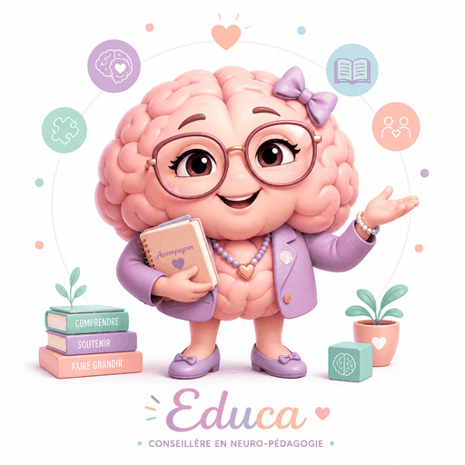

La maison des parents. Comprendre son enfant, apaiser le quotidien, et tenir le cap sans s'épuiser.
👧 Enfants dès 4 ans · 🧑 et leurs grands frères et sœurs adosTous les outils sont gratuits, sans inscription, et fonctionnent directement dans votre navigateur. Ce que vous y écrivez reste sur votre appareil — rien n'est envoyé nulle part.
Avant de corriger, comprendre. Ces guides expliquent ce qui se passe dans sa tête.
Les devoirs, les crises, les consignes qui ne passent pas. Les outils du jour le jour.
Pour les parents d'adolescents. Le lien change de forme — il ne se casse pas.
Un parent épuisé n'accompagne plus personne. Ces outils sont pour vous, pas pour l'enfant.
La paperasse et les rendez-vous : les rendre praticables.
Pour les familles qui souhaitent y adosser une dimension spirituelle.
On apprend mieux en jouant — et un jeu se refuse moins qu'un exercice.
Des fiches synthétiques à garder sous la main ou à donner à l'école.
Les 20 outils annoncés ici sont désormais en ligne. Il reste à construire :